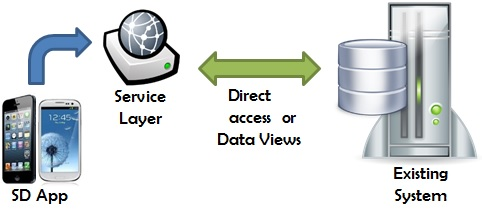

How to integrate a Native Mobile Application developed in GeneXus with a pre-existing one
The main scenario to address here is when you have a pre-existing web application that hasn't been developed with GeneXus and to which you need to integrate a module for Native Mobile applications.
Is this possible? Under what conditions? Does my pre-existing application have to be developed with GeneXus? What if I have restrictions such as not being able to create an independent database? How can I access or use the pre-existing system’s database?
Remember that the architecture of the Native Mobile solution provided by GeneXus consists of graphic interface tasks, metadata interpretation, and communication of the application on the device with a service layer on a web server. These services will access the database.
The main scenario can be divided into three cases.
Case 1 - Independent Database in the Native Mobile module
The KB for the Native Mobile application will create its own database, which will be synchronized with the pre-existing system database through services or APIs. Learn more: Integration Scenario: No Database in the SD module: access through services to pre-existing system.

Case 2 - Direct Access to pre-existing system Database
The KB for the Native Mobile application will not create its own database. Instead, it will access the pre-existing system database using a reverse engineering mechanism (DBRet or manually through Data Views associated with transactions). Learn more: Integration Scenario: No Database in the SD module: direct access to pre-existing system Database.

Case 3 - Access through services to pre-existing system Database
The KB for the Native Mobile application will not create its own database and will not be able to access that of the pre-existing system (for security reasons, for instance). However, the pre-existing system provides us with APIs or services controlled by it to enable us to work with data. Learn more.